Filtermodifikation beim Yupiteru MVT-7000
Adrian Böhlen
Version 1.1 vom 16.10.2024
Einleitung
Im Frühling 2024 konnte ich diesen tragbaren Breitbandempfänger zu rund einem Fünftel des seinerzeitigen Neupreises über eBay in England erwerben. Der Zustand ist ausgezeichnet, fast neuwertig, was bei solchen Käufen längst nicht immer der Fall ist. Ein weniger schöner Fall ist ausführlich auf der Seite Mersey Radio dokumentiert. Für detaillierte Informationen zu diesem Empfänger und seiner Verwendung sei ausdrücklich auf diese sehr informative Seite verwiesen. Auch ich werde wiederholt darauf Bezug nehmen.
Während ich früher zum DX den grossen Kommunikationsempfänger AOR AR-5000 einsetzte, bin ich inzwischen (wieder) bei portablen Geräten gelandet, die den unschlagbaren Vorteil haben, dass man sie mühelos in den Urlaub oder auch einfach nur ins Freie mitnehmen kann; Hauptsache raus dem elektrischen Störnebel des Hauses oder der Siedlung. Natürlich bietet ein kleines Gerät wie der MVT-7000 längst nicht so viele Einstellmöglichkeiten wie ein stationärer Empfänger und hat auch sonst so seine Schwachpunkte, dennoch ist es erstaunlich, was so ein Winzling zu leisten imstande ist.
Eigenschaften
Das Gerät kam wohl um 1990 auf den Markt, ehe es nach ein paar Jahren vom fast gleich aussehenden MVT-7100 abgelöst wurde. Ausserdem gab es eine stationäre Variante ungefähr in der Grösse eines Autoradios unter dem Namen MVT-8000. Der japanische Hersteller Yupiteru existiert noch immer (Stand 2024), stellt jedoch keine Empfangsgeräte mehr her.
Der MVT-7000 ist ein Breitbandempfänger (auch Funkscanner oder Scanner genannt) mit einem durchgehenden Frequenzbereich von 0.1 bis 1300 MHz, wobei der garantierte Empfangsbereich bei 8 MHz beginnt. In der Praxis ist aber bereits im 49 Meter-Band, d.h. ab etwa 6 MHz Empfang möglich! Als Betriebsarten sind AM, Schmalband-FM (NFM) und Breitband-FM (WFM) verfügbar, die unabhängig von der aktuellen Frequenz eingestellt werden können. Die Schrittweite ist in verschiedenen Stufen zwischen 5 und 100 kHz wählbar (in WFM stehen nur 50 und 100 kHz zur Verfügung). Betrieben wird der ungefähr 17 × 6 × 4 cm grosse Empfänger mit 4 Mignon-Zellen (AA, bzw. gleichartigen NiMH-Akkus) oder externer 12 V Gleichspannung. Wie bei allen derartigen Geräten befindet sich auf der Oberseite der Antennenanschluss in Form eines BNC-Bajonetts, auf die dann z.B. die mitgelieferte Antenne aufgesteckt werden kann. Dabei handelt es sich nicht, wie sonst üblich, um eine Gummi-Wendelantenne, sondern um eine starre Teleskopantenne. Allerdings habe ich mir dann noch eine bis 75 cm Länge ausziehbare Teleskopantenne mit Kippgelenk besorgt, was vor allem beim stationären Betrieb vorteilhaft ist.
Bei Mersey Radio wird vor allem die sehr hohe Empfindlichkeit des Gerätes hervorgehoben, die sogar noch einen Tick besser als beim Nachfolger sein soll. Das kann ich bestätigen und dahingehend ergänzen, dass dies nicht nur in den dort erwähnten Flugfunkbereichen der Fall ist, sondern selbst noch auf Kurzwelle, obwohl dies nicht der Hauptempfangszweck eines solchen Empfängers ist. Allerdings wird in der dazu erforderlichen Betriebsart AM dasselbe Filter verwendet wie bei NFM, so wie bei anderen Funkscannern auch. Da sich dies nicht ändern lässt, muss man damit leben, dass sich starke Kurzwellensender über mehrere Kanäle hinziehen, was bei der inzwischen nicht mehr so starken Auslastung dieses Frequenzbereiches aber zu verschmerzen ist. Wesentlich ärgerlicher ist es, dass die Trennschärfe auch in der Betriebsart WFM, welche zum Empfang der UKW-Hörfunksender benötigt wird, sehr schlecht ist. Stark einfallende Signale sind noch auf zahlreichen Nachbarkanälen rechts und links zu hören, was den Empfang schwächerer Sender im immer noch dicht belegten UKW-Band verunmöglicht. Dabei wären solche dank der hohen Empfindlichkeit wohl ohne weiteres aufzunehmen. Überraschend ist dieses Verhalten nicht, denn in einschlägiger Fachliteratur wird darauf hingewiesen, dass bei dieser Art Empfänger zumeist nur ein geringer Aufwand für WFM betrieben wird und keinesfalls eine Trennschärfe wie bei einem UKW-Tuner erwartet werden darf. Dies gilt nicht nur für portable Geräte wie dieses, sondern sogar für teure Stationsempfänger.
WFM wird normalerweise separat verarbeitet, deshalb lässt sich hier durchaus noch etwas verbessern, ohne andere Funktionen zu beeinträchtigen. Die technischen Daten in der Bedienungsanleitung liefern leider keine Angaben, welche Zwischenfrequenzen (ZF) verwendet werden, aber Geräte mit solch grossem Empfangsbereich sind üblicherweise als Dreifachsuper ausgeführt, wobei WFM auf der zweiten ZF von 10.7 MHz verarbeitet wird. Und für diese ZF habe ich von früheren Umbauprojekten noch geeignete schmale Filter in der Bastelkiste. Vor einem solchen Eingriff muss das Gerät aber zunächst mal geöffnet werden, und das hat es in sich!
Zerlegung
Die Zerlegung ist bei Mersey Radio sehr gut dokumentiert. Ohne diese Hilfe wäre ich vermutlich gescheitert, denn das Vorgehen ist nicht intuitiv, aber eigentlich sollte der Benutzer solch ein Gerät ja auch nicht selber auseinander nehmen…
Als erstes muss der Kunststoffdrehknopf des rastenden Abstimmknopfes durch vorsichtiges Ziehen entfernt werden. Um das Gerät öffnen zu können, ist es zwingend erforderlich, die darunter versenkt platzierte runde Befestigungsmutter zu entfernen (Abb. 1). Bei den beiden anderen Drehknöpfen ist dies nicht notwendig. Diese Aktion kann viel Kopfzerbrechen bereiten. Der Autor von Mersey Radio empfiehlt, mit einem kleinen Schraubenzieher zu versuchen, die Mutter zu lösen, was bei mir nicht funktioniert hat. Ich bin dann zum Schluss gekommen, dass man auf beiden Seiten gleichzeitig drücken muss, aber da mir ein dafür geeignetes Werkzeug fehlte, löste ich das Problem, indem ich zwei Nägel im richtigen Abstand (8 mm) durch ein Stück Holzleiste trieb, und es mit dieser Konstruktion schlussendlich zustande brachte, durch vorsichtiges Drehen die festsitzende Mutter zu lösen. (Abb. 2 und 3)
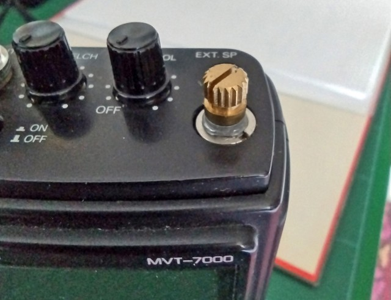
Abb. 1: Drehknopf mit entferntem Abstimmungsknopf. Die runde Befestigungsmutter ist gut zu erkennen.
Eigene Aufnahme vom 22.09.2024
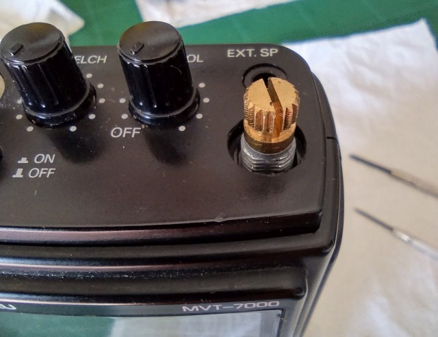
Abb. 2: Die runde Befestigungsmutter ist entfernt.
Eigene Aufnahme vom 21.09.2024
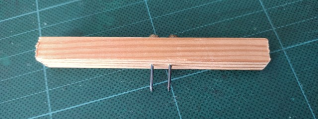
Abb. 3: Selbst gebasteltes «Werkzeug» zum Lösen der Befestigungsmutter
Eigene Aufnahme vom 20.09.2024
Ist dies geschafft, müssen die kleinen Schrauben entfernt werden, die die beiden Gehäuse-Halbschalen zusammenhalten; insgesamt 10 Stück. Das ist sehr einfach und klappt mit einem kleinen Kreuzschlitz-Schraubenzieher problemlos. Damit sind alle Vorarbeiten erledigt und es geht als nächstes darum, sehr vorsichtig die beiden Hälften auseinander zu bewegen. Nun achte man insbesondere auf den freiliegenden Drehknopf, der nur mit Lötzinn über seine drei zierlichen Anschlüsse auf der Platine befestigt ist. Beim Öffnen muss er durch das Loch auf der Oberseite bewegt werden, ohne Druck auf ihn auszuüben. Dabei darf auch das Kabel, dass die beiden Platinen verbindet, nicht belastet werden, sondern muss an der Verbindungsstelle (einer feinen zweipoligen Steckverbindung) vorsichtig gelöst werden. Eine weitere Verbindung zwischen den beiden Platinen erfolgt über eine 16-polige Stiftleiste, die ebenfalls vorsichtig aus dem Gegenstück gezogen werden muss. Dies alles hat gleichzeitig zu geschehen! (Abb. 4)
Bei diesem Vorgang lässt es sich nicht vermeiden, dass mehrere Kleinteile herausfallen, nämlich die Metallplatten, in die die Gehäuseschrauben eingedreht werden, und die seitlich angebrachten Druck- und Schiebeschalter.
Austauschen des Keramikfilters
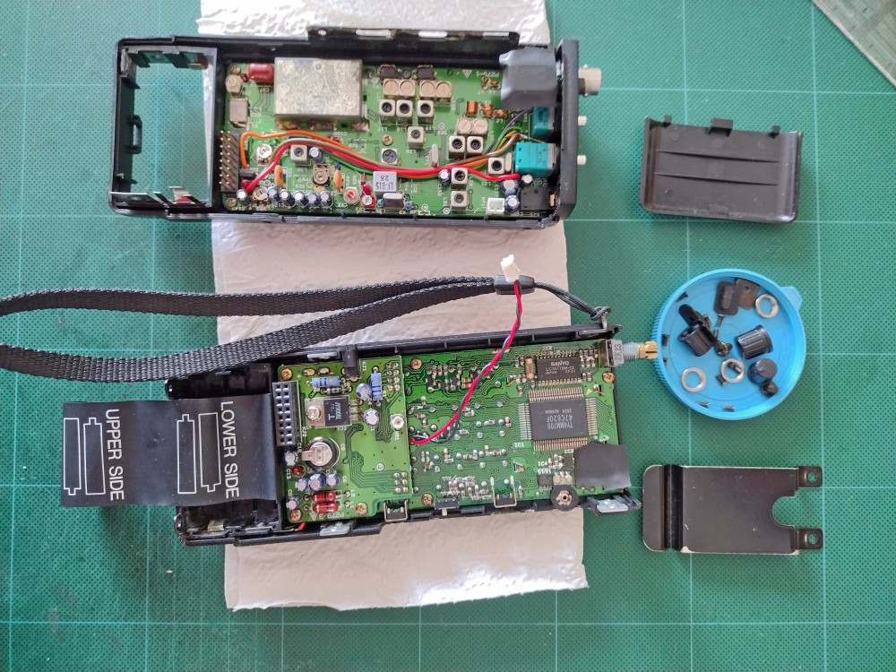
Abb. 4: Gerät geöffnet. Rückseite oben, Vorderseite unten, diverse Kleinteile rechts. Die elektrische Verbindung der beiden Teile erfolgt über das rote Verbindungskabel mit einen zweipoligen Stecker, sowie über die 16-polige Leiste links.
Eigene Aufnahme vom 20.09.2024
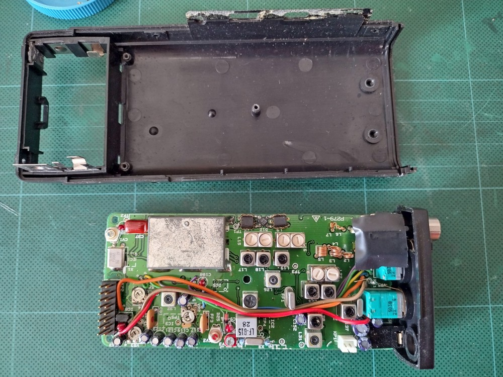
Abb. 5: Entfernte Platine der Geräterückseite mit der Hochfrequenztechnik. Zum Abschätzen der Grössenverhältnisse beachte man das quadratische Raster der Unterlage, dessen Linien einen Abstand von 5 cm aufweisen.
Eigene Aufnahme vom 20.09.2024
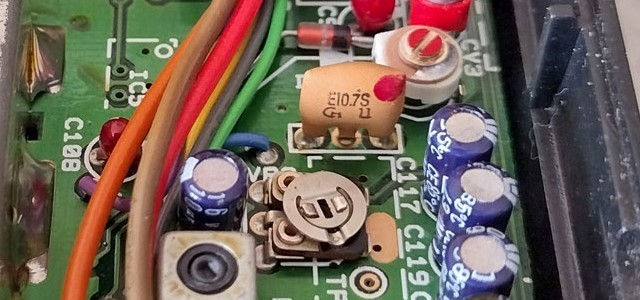
Abb. 6: Originales Keramikfilter für WFM mit der Bezeichnung E10.7S
Eigene Aufnahme vom 20.09.2024
Der Hochfrequenzteil befindet sich auf der Platine in der Gehäuserückseite. Um sie zu entfernen, sind drei weitere Schrauben zu lösen. (Abb. 5) Neben 5 in Reihe stehend eingelöteten blauen Elektrolyt-Kondensatoren lässt sich dort das für WFM eingesetzte Keramikfilter erkennen. Es handelt sich um ein SFE 10.7MS3-A (Aufschrift: E10.7S) von Murata, welches laut The FM Ceramic Filter Page bereits bei -3db eine Bandbreite von 180 kHz aufweist, was beinahe zwei UKW-Kanälen entspricht. Bei -20db beträgt diese sogar 520 kHz und erklärt somit sehr anschaulich die schlechte Trennschärfe des Gerätes in der Einstellung WFM. (Abb. 6)
Das Problem lässt sich beheben, indem ein baugleiches Filter desselben Herstellers mit deutlich schmalerer Bandbreite an seiner Stelle eingebaut wird. Dies ist ohne weiteres möglich, da die Nennimpedanz bei diesen zweistufigen Filtern (SFE) jeweils 330 Ohm beträgt. Ich habe mich für den Typen SFE 10.7 MV (Aufschrift E10.7V) entschieden, welchen ich vor Zeiten bei Jürgen Martens (DF5TY) in Eningen erwerben konnte. Diese sehr schmalen Filter haben bei -3db eine Bandbreite von nur noch 56 kHz (bei -20db 110 kHz). Dies ist für eine verzerrungsfreie Wiedergabe eines UKW-Senders zwar zu wenig, aber da wir es hier nicht mit einer HiFi-Anlage, sondern einem Funkscanner zu tun haben, kann darüber hinweggesehen werden.
Allerdings weist Jürgen Martens an anderer Stelle darauf hin, dass man bei einem einzigen Keramikfilter im ZF-Kreis keine Wunder erwarten darf. Bekanntermaßen weist ein einzelnes Keramikfilter nur bescheidene Werte bei der Flankensteilheit und der Sperrdämpfung überhaupt auf. Daher sind selbst in einfachen Taschenempfängern zumindest zwei, bei hochwertigen Stereo-Tunern auch mehr, Keramikfilter im ZF-Teil enthalten. Bei solch kleinen Geräten, die einen derart grossen Frequenzbereich überstreichen, fehlt aber leider schlicht und einfach der Platz für aufwändige Schaltungen mit mehreren Filtern und Verstärkern im ZF-Teil.
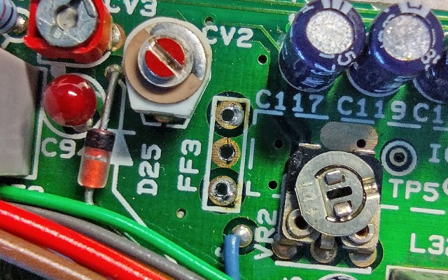
Abb. 7: Ansicht von oben. Das Keramikfilter an der Position «FF3» ist entfernt. Die drei in Reihe liegenden Löcher sind gereinigt.
Eigene Aufnahme vom 21.09.2024
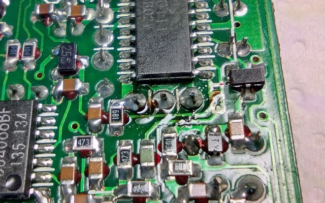
Abb. 8: Ansicht von unten. Das neue Filter ist in die drei in Reihe liegenden Löcher eingelötet.
Eigene Aufnahme vom 21.09.2024
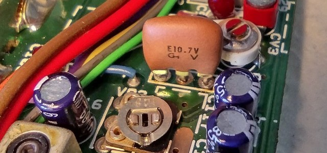
Abb. 9: Ansicht von oben mit dem neu eingesetzten Keramikfilter für WFM (E10.7V)
Eigene Aufnahme vom 21.09.2024
Die Arbeit mit dem Lötkolben verlangt ausserordentlich viel Fingerspitzengefühl und eine ruhige Hand. Die Bauteile sind äusserst eng nebeneinander eingelötet und natürlich ist die Platine beidseitig mit hunderten Bauteilen bestückt. Ist das Filter mit Hilfe von Lötsauglitze erst einmal entfernt, geht es darum, die drei Löcher zu durchstossen, wozu ich eine Stecknadel verwendet habe. (Abb. 7) Danach kann das neue Filter eingesetzt und mit wenig Lötzinn die drei Anschlussbeinchen sauber verlötet werden. Der Anschluss auf der Innenseite der Platine wird dabei direkt mit dem SMD-Widerstand mit der Aufschrift «189» verbunden. (Abb. 8 und 9)
Zusammenbau
Ist dies geschafft, kann das Gerät wieder zusammengebaut werden. Ein Funktionstest bei geöffnetem Gerät ist leider nicht möglich, da die elektrischen Verbindungen unterbrochen sind. (siehe Abb. 4) Vor dem Zusammenbau habe ich noch diverse Reinigungsarbeiten ausgeführt, vor allem auf der dünnen seitlichen Abdeckung, wo einst eine Art Klebstoff verwendet wurde, der aber unnötig ist, und sich im Laufe der Zeit zersetzt hat. Mit einem scharfen Messer liessen sich die Reste gut entfernen. Ausserdem wies das Gehäuse im Bereich des Batteriefachs Risse auf, was wenig erstaunt, da man die Batterien mit ziemlicher Kraft einsetzen muss, so stark sind die federnden Anschlussplättchen. Ich habe dazu den Kunststoff im Bereich der Risse angeschliffen und anschliessend grosszügig mit UHU Plus bestrichen.
Der Zusammenbau ist leider noch kniffliger als die Zerlegung. Vor allem die herausgefallenen Kleinteile wieder an ihren Platz zu bringen und darauf zu achten, dass sie dort auch blieben, sorgt für viel Kopfzerbrechen. Und natürlich muss wieder besonders auf den Drehknopf geachtet werden, dass er gut durch das Loch gleitet und nirgends hängenbleibt. Das Zusammenschrauben ist ebenfalls nicht ohne Schwierigkeiten, insbesondere sind die kleinen Metallplatten auf der Seite des Batteriefachs nur mit viel Geduld an die richtige Stelle zu bewegen, sodass die kleinen Schrauben eingedreht werden können.
Funktionstest und Ergebnisse
Nach dem Einsetzen der Akkus sind leider allfällig gespeicherte Frequenzen gelöscht. Wie die Speicherung funktioniert, ist bei DH0HQN dokumentiert. Heute gäbe es evtl. Kondensatoren mit der Kapazität von 1 F oder mehr, die in dem kleinen Gehäuse noch Platz fänden. Damit wäre dann der Speicherinhalt über viele Stunden oder gar Tage gesichert. Für mich gibt es in dieser Sache aber derzeit keinen Handlungsbedarf. Vielmehr interessiert mich nach dem Einschalten, ob in der Stellung WFM etwas zu hören ist, und falls ja, was. Wie ich erleichtert feststelle, ist die Modifikation geglückt und das neue Filter wirkt.
Die Zeit reicht nun nicht mehr für umfangreiche Tests, aber wenige Tage später geht es mit dem Gerät in den Urlaub nach Unterbach bei Meiringen. Die Lage im engen Talgrund zwischen zwei Alpenketten ist für den UKW-Fernempfang ebenso eine Herausforderung wie nahe gelegene, stark einfallende Sender, die das Tal mit den ortsüblichen Programmen versorgen. Gerade mit letzterem kommt der MVT-7000 in der Stellung WFM leider überhaupt nicht zurecht. Zwar sorgt das schmalere Filter dafür, dass sich die einzelnen Sender nun nicht mehr über so viele Nachbarkanäle hinaus erstrecken wie zuvor. Allerdings haben die von Jürgen Martens erwähnten bescheidenen Werte bei der […] Sperrdämpfung zur Folge, dass starke Sender dann beim Weiterscannen unvermittelt wieder auftauchen, teilweise auch weit abseits der eigentlichen Frequenz. So ist Radio BeO (94.9 MHz) vom 4 km entfernten und in Sichtweite liegenden Sender Hofstetten vor allem im Bereich zwischen den Chasseral-Frequenzen 102.3, 103.0 und 104.2 fast überall zu hören und allfällige dazwischenliegende, schwache Signale werden von diesen «Geisterstationen» völlig zugedeckt.
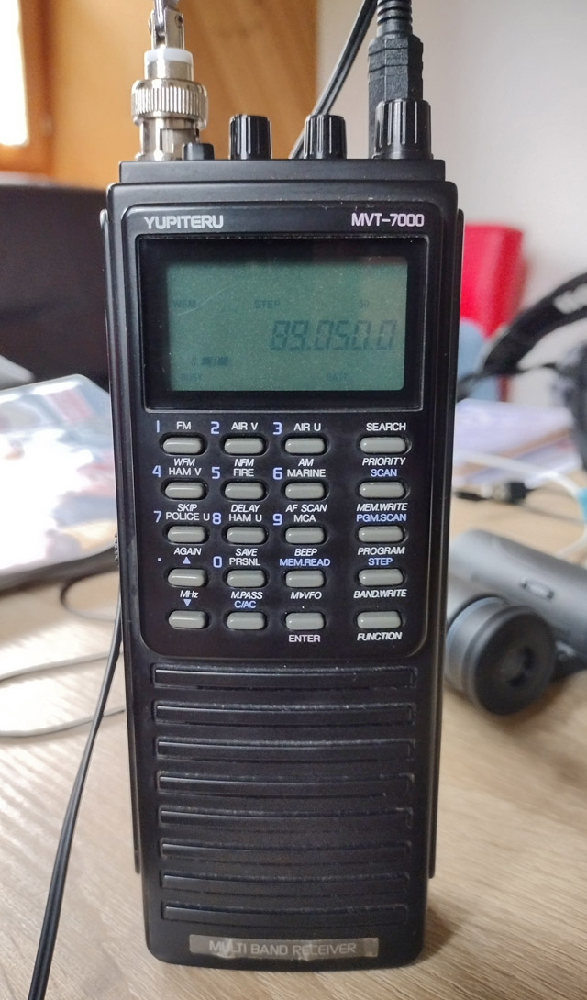
Abb. 10: Das Gerät in Betrieb. Empfangen wird hier die Frequenz 89.0 MHz vom 144 km entfernten Witthoh mit dem Programm SWR 4 Baden-Württemberg in der Betriebsart WFM, wobei nach einiger Zeit auf 89.05 MHz abgestimmt werden muss. Trotz schwachem Signal mit nur einer S-Stufe ist der Empfang klar und rauscharm.
Eigene Aufnahme vom 01.10.2024
Trotzdem gelingt der Empfang des einen oder anderen schwachen Signals in WFM, allerdings sind diese oft von einem undefinierbaren, aus verschiedenen Ortssendern zusammengemischten Klangteppich überlagert. Dieser lässt sich etwas reduzieren, wenn die recht lange Teleskopantenne etwas eingeschoben wird. Dadurch wird natürlich das eigentlich zu empfangende Signal auch schwächer und mitunter verrauschter. Der eingebaute Abschwächer (ATT) neben dem Antennenanschluss dämpft leider so stark, dass die gewünschte Station meist ebenfalls verschwindet. Bei so viel Kritik: Die Witthoh-Frequenz 89.0 MHz lässt sich mit dem Programm SWR 4 hier mitten in den Alpen ordentlich empfangen, was angesichts von 144 km Distanz und der Sendeleistung von gerade mal 5 kW ziemlich erstaunlich ist, zumal davon Richtung Schweiz kaum was rausgeht. Beim längeren Zuhören macht sich aber ein anderer Effekt bemerkbar: Die Frequenzstabilität in WFM scheint nicht sehr gut zu sein, denn nach etwa 20 Minuten in Betrieb muss die Frequenz um eine 50 kHz-Stufe nach ober korrigiert werden. Dies ist natürlich mit dem originalen, sehr breiten Filter nicht nachweisbar, mit dem nur noch 56 kHz schmalen nachgerüsteten Filter hingegen schon. Der bereits angesprochene bescheidene Wert bei der Flankensteilheit eines einzelnen Filters hat im übrigen den positiven Nebeneffekt, dass die Klangqualität nicht nennenswert beeinträchtigt wird.
Insgesamt lässt sich sagen, dass sich die Modifikation trotz der beschriebenen Einschränkungen durchaus gelohnt hat. Dadurch wird das Gerät für halbwegs ernsthaften UKW-Empfang überhaupt erst brauchbar. Schwach bis mittelstark zu empfangende Sender werden im Abstand von 200 kHz jetzt einwandfrei getrennt, auch die Trennung im Abstand von 100 kHz ist in vielen Fällen möglich. Die beobachteten Probleme, verursacht durch stark einfallende Sender, dürften sich ab 2025 ohnehin deutlich reduzieren, wenn in der Schweiz die SRG die Rundfunkversorgung auf UKW eingestellt hat, und nur noch private Anbieter auf einem Bruchteil der heute benutzten Frequenzen aktiv sein werden.
Weitere Beobachtungen
Nachstehend noch einige weitere Bemerkungen zu diesem Empfänger, die mit dem Thema dieses Berichtes zwar nicht direkt zu tun haben, aber zeigen, was damit sonst noch alles möglich ist.
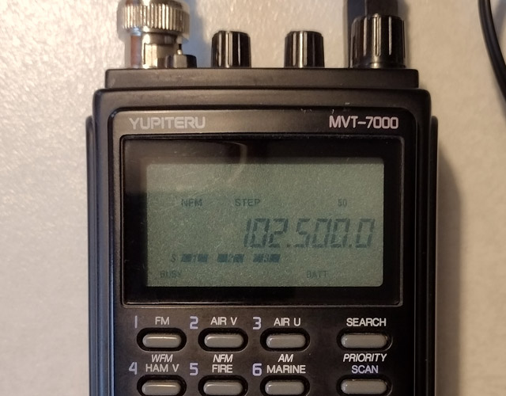
Abb. 11: Die Signale des weit nördlich der Schweizer Grenze liegenden Senders Witthoh kann der MVT-7000 mitten in den Alpen noch mit 3 von 5 S-Stufen wiedergeben, dies allerdings nur in NFM.
Eigene Aufnahme vom 01.10.2024
Wenn beim UKW-DX versuchshalber mal auf NFM umgeschaltet wird, so präsentiert sich ein gänzlich anderes Bild als in WFM: Zum einen ist die Empfindlichkeit deutlich höher und das S-Meter springt oft 2 – 3 Stufen nach oben. Zum anderen sind die beschriebenen Grosssignaleffekte weitaus schwächer und Sender, von denen in WFM keine Spur zu erkennen ist, sind laut und «deutlich» hörbar, z.B. Radio 7 von Witthoh auf 102.5 MHz mit 3 S-Stufen. Auch die Trennschärfe ist so gut, dass selbst 100 kHz neben Ortssendern Empfang möglich ist, z.B. der Bantiger auf 93.2 MHz (SRF 2) neben dem 5.6 km entfernten Sender Brienz/Wellenberg auf 93.1 MHz (SRF 1). Für ausgesprochenes DX in diesem Frequenzbereich ist der Empfänger also in der Stellung NFM durchaus zu gebrauchen, wenngleich dies den erheblichen Nachteil mit sich bringt, dass dynamik-komprimierte und/oder stark modulierte Signale kaum lesbar sind. Am besten geeignet für solche Versuche sind Kultur- und/oder Klassik-Programme (getestet mit SRF 2, SWR Kultur und dem Deutschlandfunk). Auch die Frequenzstabilität ist in NFM ausgezeichnet und es zeigen sich selbst bei längerer Betriebsdauer keinerlei Abweichungen.
In diesem Zusammenhang lohnt sich ein Blick auf das bei NFM (und AM) verwendete Filter auf der Zwischenfrequenzebene 455 kHz. Es ist in Abb. 5 zu sehen (graues Kästchen) und trägt die Bezeichnung LF-B15. Das Datenblatt bescheinigt diesem vom Hersteller NKT stammenden Filter gute Werte für die Flankensteilheit und Sperrdämpfung. So beträgt die Bandbreite bei -6db 15 kHz und bei -40db 40 kHz. Stark einfallende Nachbarsender werden auf diese Weise wirkungsvoll unterdrückt.
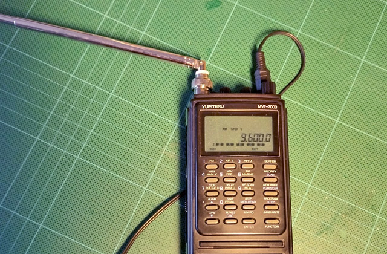
Abb. 12: Kurzwellensender in nicht allzu dicht belegten Bändern lassen sich in guter Qualität mit dem MVT-7000 empfangen, so wie hier Radio România Internațional mit seinem deutschsprachigen Programm auf 9600 kHz, dessen Signalpegel 5 von 5 S-Stufen erreicht. Ein Kopfhörer ist auf der Oberseite eingesteckt.
Eigene Aufnahme vom 26.09.2024
Der MVT-7000 ist bekanntlich ein Breitbandempfänger, daher lohnt sich ein Blick auf andere Wellenbereiche. Nun heisst es zwar manchmal, der Kurzwellenbereich sei bei den meisten Funkscannern nur ein Werbeargument und in der Praxis kaum zu gebrauchen , beim MVT-7000 würde ich das so aber nicht formulieren. Wie zuvor gesehen, entspricht die AM-Bandbreite etwa drei Kurzwellenkanälen, trotzdem lassen sich starke Signale der noch aktiven Auslandsdienste sehr gut empfangen und die Empfindlichkeit ist auch in diesem Wellenbereich hoch genug, dass dazu die Teleskopantenne ausreicht.
Ein Punkt, der bei Mersey Radio nebst der hohen Empfindlichkeit besonders hervorgehoben wird, ist die Wiedergabequalität. Die meisten solch kleinen Geräte klingen ja reichlich blechern, aber Yupiteru hat durch den Einbau eines qualitativ hochwertigen Lautsprechers ein Gerät geschaffen, das sich ohne weiteres auch zum gemütlichen «Zuhör-Empfang» eignet. Bevorzugt man hingegen einen Kopfhörer, so ist auch dies kein Problem, ein Anschluss für einen 3.5 mm Klinkenstecker ist auf der Oberseite vorhanden. Dieser ist natürlich für Mono-Stecker vorgesehen, d.h. wenn man nicht im Besitz eines speziellen Funk-Kopfhörers ist , muss man die Anschlüsse eines herkömmlichen Stereokopfhörers selbst entsprechend mit einem Monostecker verlöten, sodass beidseitig ein Tonsignal zu hören ist.
Wie Mersey Radio zu entnehmen ist, war und ist der Empfänger vor allem bei Flugfunk-Enthusiasten beliebt und geschätzt. Auch diesbezüglich kann ich im Urlaub einige Versuche durchführen und die Info-Kanäle der umliegenden Militärflugplätze (Meiringen und Alpnach) hören. Um «richtigen» zivilen oder militärischen Flugfunk zu empfangen, bedarf es aber einiger Kenntnisse mehr als ich sie derzeit habe, das liesse sich jedoch alles erlernen. Dank dem durchgehenden Frequenzbereich bietet der MVT-7000 jedenfalls die idealen technischen Voraussetzungen dazu.